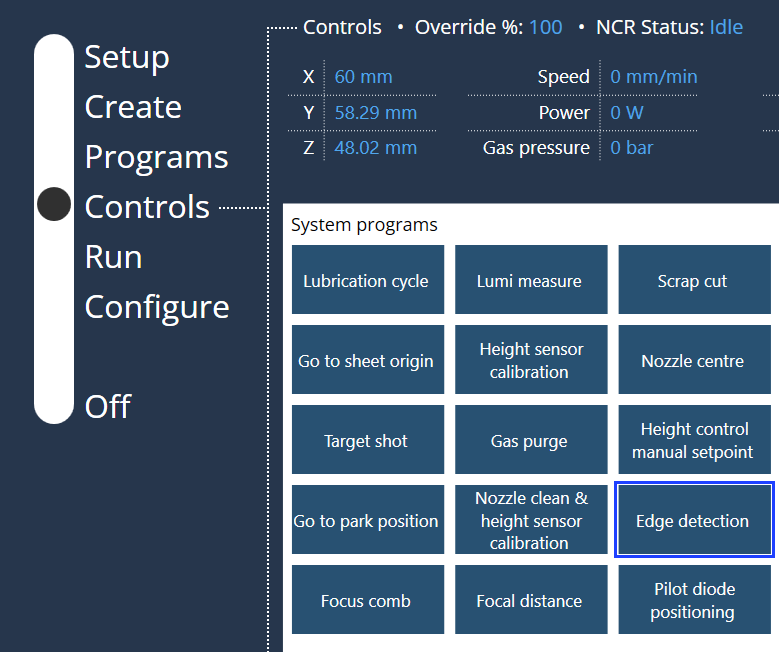
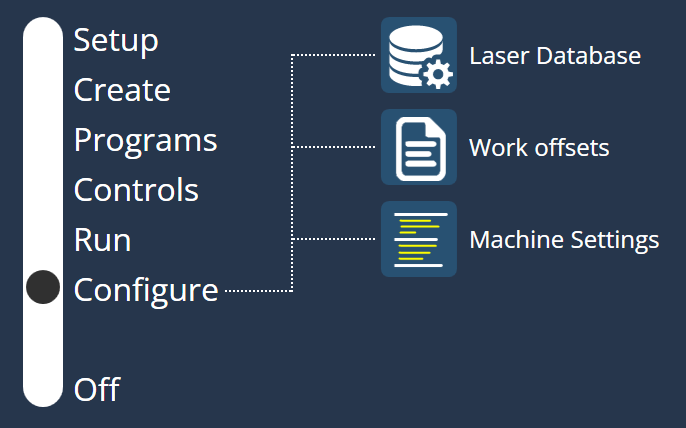

Accertamento spigoli
La funzione di accertamento spigoli consente di calcolare il punto di origine e l’angolo di rotazione della lamiera.
In base alla rotazione della lamiera, è necessario ruotare il piano XY del programma in modo tale che i job siano inseriti nella lamiera ruotata.
Sintassi: G17 D= Rotazione lamiera-
Per abilitare questa funzione, accedere a Configura → Impostazioni della macchina → Opzioni PLC → Parametri funzioni.
-
Abilitare Attiva funzione margine della lamiera da Controllo vario macchina.

-
È inoltre possibile programmare manualmente la funzione di accertamento spigoli.
-
Passare alla pagina Comandi per selezionare Accertamento spigoli.
 -
Selezionando il programma Accertamento spigoli, l’operatore deve inserire la lunghezza lamiera dell’asse X e Y per rilevare gli spigoli.

-
Per l’attuale funzione di accertamento spigoli automatico (accertamento spigoli a 3 punti), l’operatore deve inserire con precisione le dimensioni della lamiera e la testa di taglio deve essere posizionata con precisione vicino all’angolo della lamiera allo stesso tempo. In caso contrario, il rilevamento dei bordi potrebbe non riuscire.
-
Dopo aver eseguito la funzione di accertamento spigoli, il programma passerà al punto di origine e sposterà l’asse Z verso il basso fino all’angolo e attenderà l’accertamento spigoli dell’operatore per avviare il programma.
-
Per abilitare questa funzione, accedere a Configura → Impostazioni della macchina → Opzioni PLC → Parametri di controllo.

-
Selezionare la casella di controllo Conferma il punto di origine lamiera.
-
Con questa opzione selezionata (come il comportamento attuale):
-
Spostare la testa nel punto di origine.
-
Spostare l’asse Z in posizione bassa.
-
Attendere che l’operatore confermi l’avvio del ciclo.
-
-
Senza questa opzione selezionata:
-
Il diodo pilota verrà spostato nel punto di origine.
-
Il programma rimarrà fermo per 3 secondi.
-
Avviare il programma per continuare.
-